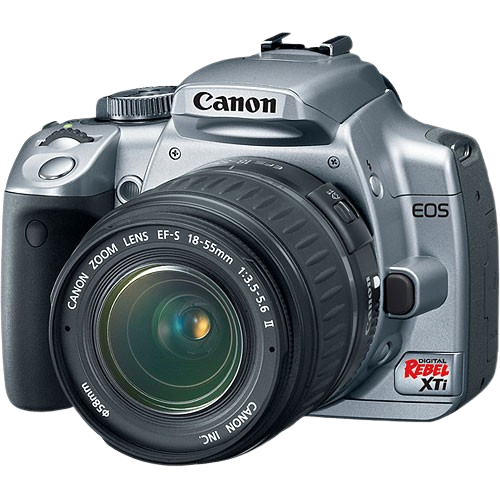
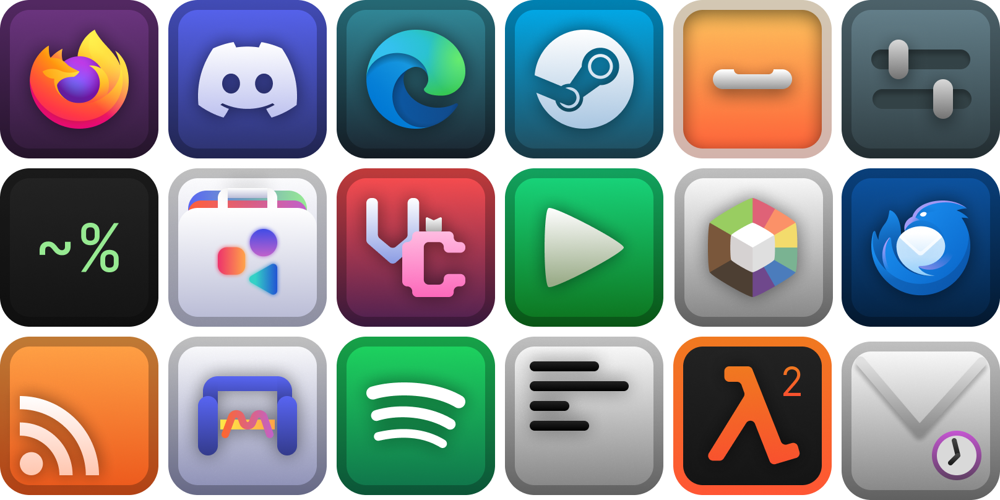
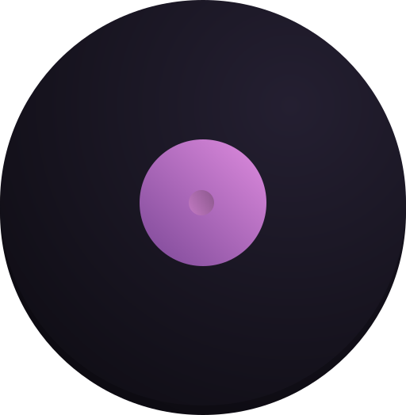
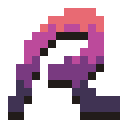

Discover some photos I've taken, I've been starting to take more photos recently so I thought this would be a cool place to show thenm all off.
Arashi is a smooth, modern icon set with a bit of spice. Currently works best on KDE!
Badass New Audio Player 4000 (bnap4000) is a simple music player made with true randomness in mind. Using libVLC as a backend meaning you don't have to worry about if your music will play, all you need to worry about is getting homework done or working on your project.
RIFT is a new way of downloading files of the internet, it uses repositories that anyone can setup and host on a web server. RIFT runs right in your terminal so you can use it on Windows, Mac, and Linux with ease.
Unofficial documentation for Sober, a program to run Roblox on Linux. The documentation is made with public knowledge of Sober.